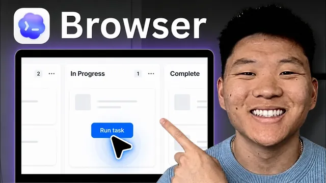

Codex 브라우저 에이전트로 진짜 뭐든 자동화된다

원본 영상 보기 →
- 자동화 순서는 API → 결정론적 매크로 → AI 비전 기반 브라우저 유즈예요
- 한 번의 시연이 재사용 가능한 자동화 스킬이 돼요
- 민감한 계정 작업은 자동화 전에 사람이 직접 반복 검증해야 해요
한 줄 요약
코덱스(Codex)의 브라우저 유즈(browser use) 기능으로 웹사이트 UI 버그를 자동으로 찾아내고, API가 없는 서비스에서도 반복 작업을 "스킬"로 저장해 자동화하는 전 과정을 시연하는 영상이에요. 나아가 컴퓨터 유즈로 데스크톱 앱 설정까지 조작합니다.
전체 내용 정리
코덱스 데스크톱 앱과 브라우저 유즈의 기본 구조
네이트는 코덱스 데스크톱 앱을 주력으로 쓴다고 소개해요. 화면 오른쪽에 브라우저가 함께 떠서 AI가 직접 조작하는 모습을 볼 수 있다고 설명합니다.
먼저 원칙을 짚어줘요. 요즘 대부분의 도구는 API가 있어서 코덱스를 API나 플러그인으로 바로 연결하면 됩니다. 하지만 API가 없는 서비스도 종종 있는데, 이때 브라우저 유즈를 쓰는 거죠.
인앱 브라우저로 UI를 직접 고치고 85개 자동 QA 체크까지 돌린 사례
로컬호스트에 띄운 폼 제출 웹사이트를 예로 들어요.
여백이 겹치는 등 UI 문제가 몇 가지 보이자, "annotate" 버튼으로 화면의 특정 요소를 클릭해 "이 전화번호 박스가 회사명 박스와 겹친다, 고쳐달라" 식으로 지적합니다. 그 내용이 채팅으로 바로 전달돼 수정되죠.
이어서 브라우저 유즈가 헤드리스(백그라운드 실행)로도, 헤디드(화면에 보이는 상태)로도 돌아갈 수 있다는 개념을 짚어요.
"이 UI를 최대한 부숴봐라"는 지시를 내리자 코덱스는 필수 입력값 검증, 유효하지 않은 이메일·전화번호 처리 등을 하나씩 클릭해가며 확인했고, 84~85개의 자동 체크를 마쳤습니다.
그 과정에서 실제 데이터 정합성 버그 두 건을 잡아냈어요. 유효하지 않은 연락처 데이터가 그대로 통과되는 문제, 국가 코드를 UK로 바꿨다가 다시 편집 화면으로 돌아오면 US로 리셋되는 문제였죠. 모바일 화면으로 전환해서도 반응형 깨짐을 추가로 발견했습니다.
API가 없는 은행 플랫폼에서 명세서 다운로드를 스킬로 만들기
Relay라는 플랫폼처럼 API가 없는 곳에서는, 원하는 작업을 자연어로 한 번만 설명하면 코덱스가 화면을 보고 클릭 위치를 스스로 판단해 수행해요.
"계정 클릭, 명세서 찾기, 두 계좌 선택해서 CSV로 다운로드, 지정 폴더에 저장"이라고 한 번 지시하자 코덱스는 별도 피드백 없이 한 번에 성공했고, 이 전체 흐름을 스킬로 저장했습니다. 이후에는 스케줄 루틴을 걸어 매달 특정 달 명세서를 이 스킬로 처리하도록 맡길 수 있어요.
다만 Relay 같은 금융 플랫폼은 보안상 세션이 자주 끊기는데요. 이때 코덱스에 내장된 패스워드 매니저를 활용합니다. 이름·URL·아이디·비밀번호가 담긴 CSV 파일을 불러오면, 로그인 정보가 채팅 기록에 노출되지 않고 안전하게 자동 입력돼요. 2단계 인증 코드까지는 자동화할 수 없어 직접 처리해야 하는 한계도 있다고 밝힙니다.
네이트는 중요한 조언을 하나 덧붙여요. 은행 계좌처럼 민감한 작업은 처음부터 전부 맡기지 말고, 최소 10번은 사람이 옆에서 지켜보며 스크립트가 안전하게 작동하는지 검증해야 한다고요.
유튜브 영상을 X 아티클로 자동 변환하는 스킬 체이닝
유튜브에 올린 영상 URL을 코덱스에 붙여넣고 "이걸 X 아티클로 만들어서 초안으로 저장해달라"고 요청해요.
X에는 API가 있지만 브라우저 유즈를 택한 이유가 있습니다. 서식이 어색하고 미디어·썸네일 처리가 불안정하며, 사용량만큼 과금되는 문제 때문이라고 설명해요.
이 작업이 진행되는 동안 새 채팅을 열어 "브라우저로 X에 들어가서 피드를 좀 스크롤해봐"라고 시켰는데요. 별도 로그인 없이 기존 세션이 그대로 유지된 채 피드를 확인할 수 있었고, Grok봇과 Grok 4.6 관련 소식을 찾아냈습니다.
원래 작업으로 돌아오면 코덱스가 영상 속 특정 장면을 스크린샷으로 찍어 아티클에 알맞게 삽입하는 것까지 자동으로 처리했어요. 최종적으로 X 드래프트에 제목과 본문, 썸네일까지 채워 넣었습니다.
컴퓨터 유즈로 데스크톱 앱 설정까지 원격 조작
브라우저 밖, 즉 실제 컴퓨터의 데스크톱 앱을 조작하는 컴퓨터 유즈 기능도 보여줘요.
플러그인에서 "computer use"를 검색해 설치한 뒤, "글리도(Glido) 데스크톱 앱을 열어서 설정에서 블루투스 기기 허용을 켜달라"고 요청합니다.
이때는 인앱 브라우저가 아니라 실제 화면이 넘어가는 방식이라, 화면 가장자리에 파란 테두리가 표시돼 컴퓨터 유즈가 작동 중임을 알 수 있다고 설명해요.
코덱스는 관리자 비밀번호나 민감한 보안 권한을 요구하는 상황이면 스스로 멈춘다는 가드레일이 있다고 밝혔습니다. 실제로 블루투스 접근을 시스템 권한으로 착각해 잠시 멈췄다가, 앱 내 설정임을 파악하고 다시 진행해 블루투스 허용 버튼을 켜는 데 성공했어요.
이 기능을 폰으로 원격 접속해 집이 아닌 곳에서도 데스크톱 설정을 바꾸는 데 쓸 수 있다는 가능성도 언급합니다.
언제 API, 언제 매크로, 언제 브라우저 유즈를 써야 할까요
영상을 마무리하며 네이트는 자동화 우선순위를 정리해요.
가장 먼저 API가 있는지 확인하는 것이 최선입니다. API가 없다면 정해진 픽셀을 순서대로 클릭하는 결정론적 매크로 스크립트를 만드는 방법이 더 저렴하고 안전해요. 화면 상태에 따라 판단이 필요한 경우에만 비전과 추론을 쓰는 브라우저 유즈로 넘어가야 한다고 강조합니다.
이런 작업이 실제로 절약하는 시간은 5~10분 수준으로 크지 않을 수 있어요. 하지만 이런 스킬들을 쌓아두면 컨텍스트 전환 없이 필요할 때마다 바로 실행할 수 있고, 여러 스킬을 이어 붙이면 훨씬 큰 효과를 낼 수 있다는 게 핵심 가치라고 결론짓습니다.
핵심 인사이트
- 자동화 순서는 API → 결정론적 매크로 → AI 비전 기반 브라우저 유즈예요: API가 있으면 항상 API가 가장 빠르고 저렴하고 안정적입니다. API가 없을 때만 매크로를, 화면 판단이 필요할 때만 비전 기반 방식을 쓰는 게 비용과 안정성 면에서 합리적이죠.
- 한 번의 시연이 재사용 가능한 자동화 스킬이 돼요: 자연어로 딱 한 번 작업 순서를 보여주면 그 흐름 전체가 스킬로 저장되고, 이후에는 스케줄 루틴으로 매달 반복 실행할 수 있습니다.
- 민감한 계정 작업은 자동화 전에 사람이 직접 반복 검증해야 해요: 로그인 정보는 패스워드 매니저로 안전하게 넘길 수 있지만, 은행 계좌처럼 위험 부담이 큰 작업은 최소 10회는 곁에서 지켜보며 스크립트가 안정적인지 확인한 뒤에야 완전히 맡기세요.
오늘 당장 해볼 것
- 매달 반복하는 온라인 작업(명세서 다운로드, 정산 리포트 확인 등) 중 API가 없는 서비스 하나를 골라, 처음부터 끝까지 어떤 순서로 클릭하는지 단계별로 메모해두세요. 이 메모가 자동화 담당자에게 그대로 넘길 수 있는 작업 스펙이 됩니다.
- 자동화를 맡기려는 업체나 담당자에게 "이 작업에 API가 있는지 먼저 확인했는지, 없다면 매크로 방식과 AI 비전 기반 방식 중 어느 쪽으로 처리할 계획인지" 물어보고 견적을 비교해보세요.
- 지금 어떤 자동화 도구에 로그인 정보를 채팅이나 메모로 그대로 입력하고 있다면, 패스워드 매니저나 별도 보안 저장 방식으로 바꿀 수 있는지 담당자에게 확인해보세요.